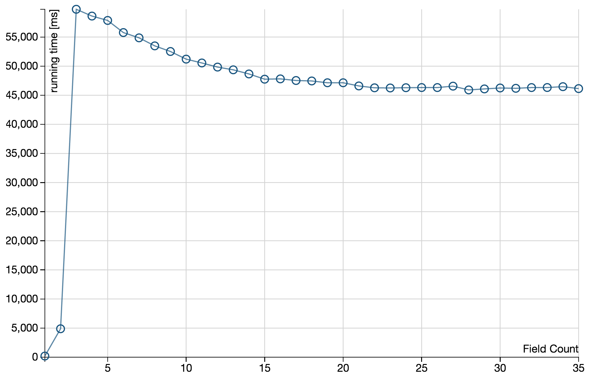
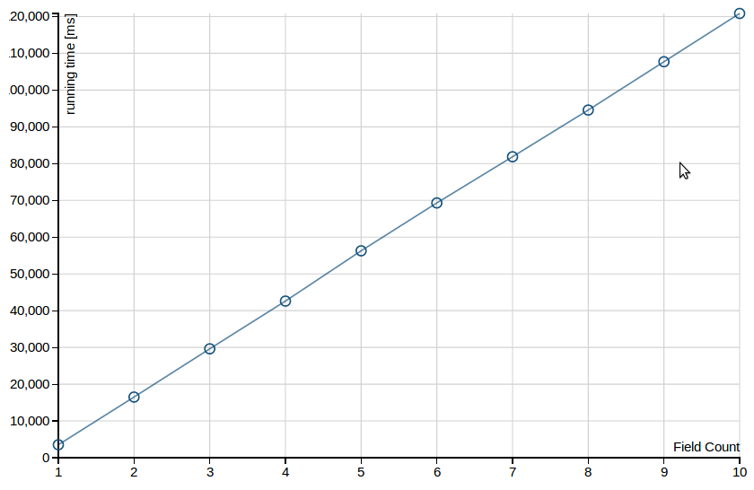
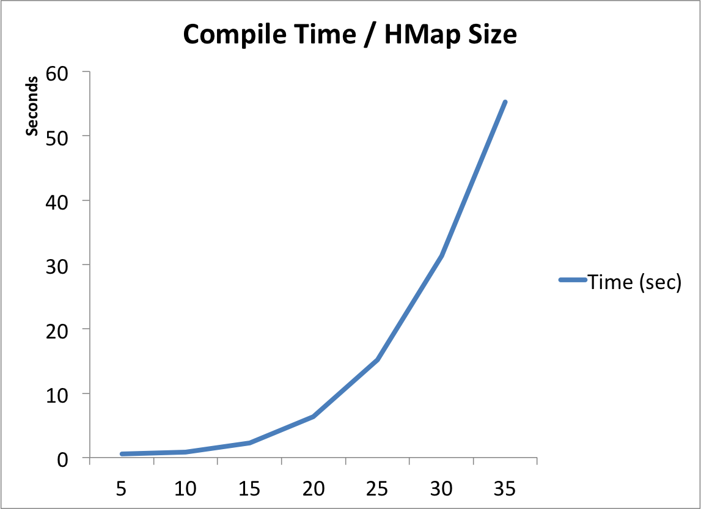
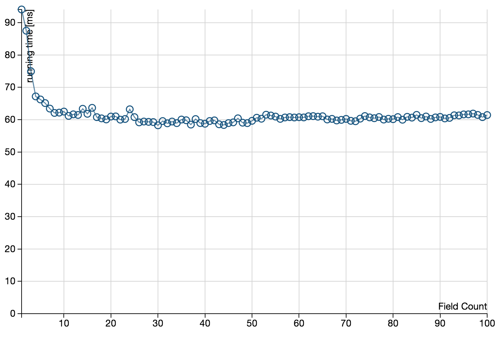

In big-data users often process large structured data. Example:
// Schema
val jobSchema = List('start_date, 'jobid, 'is_hourly_project,
'hourly_rate_min, 'hourly_rate_max, 'hourly_rate_code,
'project_budget, 'budget_min, 'budget_max, 'list_job,
'prev_jobid, 'delete_yn)
val jobs = load(jobPath, fields = jobSchema)
jobs.filter('jobid) { id: Int => !ignoredJobs(id) }
.filter('list_job, 'prev_jobid, 'delete_yn) {
(lj: String, jobId: String, dyb: String) =>
lj == "N" || jobId != "None" || dyb == "Y"}
// ...
// ...
// ...
// ...
.map(('is_hourly_project, 'hourly_rate_min, 'hourly_rate_max,
'hourly_rate_code, 'project_budget, 'budget_min, 'budget_max) ->
('budget, 'isHourly, 'hourlyRate)) {
(is_hourly_project: String, hourly_rate_min: String,
hourly_rate_max_str: String, hourly_rate_code_str: String,
project_budget: String, budget_min: String,
budget_max_str: String) =>
// ...
// ...
// ...
// ...
gb.mapStream(
('jobid, 'start_date, 'job_skills, 'seller_skills,
'catid, 'subcategory_id,'awarded_timestamp, 'amount_usd,
'name, 'description, 'job_tag_string, 'service_descr) ->
('jobid1, 'start_date1, 'JsIntCsOvJsUCs, 'JsIntCsOvJs,
'JeIntCeOvJeUCe, 'Csp_xdIntJeOvCsp_xdUJe, 'Csp_xdIntJsOvJs,
'vZ1dotvZ4, 'Csp_xddotJe, 'NormvZ1dotvZ4, 'NormCsp_xddotJe,
'avg_amount, 'vCdotvJ, 'NormvCdotvJ)) {
it: Iterator[(Int, String, String, String, String, String,
String, Double, String, String, String, String)] =>
// ...
// ...
// ...
// ...
// Numerical features
val (je, ce) =
(extendedSkills(bid._4), extendedSkills(bid._3))
// Base text features
val (jTitle, jDescr, jSkills, jTag) =
(bid._9, bid._10, skillNames(bid._3), bid._11)
val (cServiceDesc, cSkills) =
(bid._12, skillNames(bid._4))
A manager: "Vojin, it takes my developers 6 months to get up to speed with Scalding. My friends tell me that with Cascalog it takes about 1-2 months. Scala is cool, but is all this worth it?
Vojin: "Type-safety pays off in the long run and Scala will make your team work better!"
Introduce a Rec type as a super type of all records.
trait Rec {
def __data[T](field: String): T
}
Records are structural refinements of Rec where each method is a macro
val person : Rec {
def name: String
def age: Int
} = Rec(name = "Hannah", age = 30)
Field accesses are not reflective but expand to a call to __data
[[person.name]] = person.__data[String]("name")
scala> x.get("f6")
console>:18: error: No field String("f6") in record shapeless.::[
Int with shapeless.record.KeyTag[String("f1"),Int],shapeless.::[
Int with shapeless.record.KeyTag[String("f2"),Int],shapeless.::[
Int with shapeless.record.KeyTag[String("f3"),Int],shapeless.::[
Int with shapeless.record.KeyTag[String("f4"),Int],shapeless.::[
Int with shapeless.record.KeyTag[String("f5"),Int],shapeless.HNil]]]]]
x.get("f6")
^
val rec = Create.Rec(35)
(0 to 100000) foreach {_ => rec.$fPos }
import shapeless._
import syntax.singleton._
object A {
val hmap = // hMapSize = p1
records.benchmark.HMapCompileTimeBenchmark.hmap
// accessNumber = 5
hmap.get("f5") // fieldNr = 5
hmap.get("f5")
hmap.get("f5")
hmap.get("f5")
hmap.get("f5")
}
Rec(hMapSize = 35, accessNumber=5, fieldNr=(1 to 35))
Rec(hMapSize = 35, accessNumber=(1 to 10), fieldNr=5)
Rec(hMapSize = (1 to 35), accessNumber = 5, fieldNr = 5)
Rec(recSize = 100, accessNumber = (1 to 100), fieldNr = 1)
Rec
(name = "Hannah", age = "30")
("Hannah", age = "30")
("Hannah", "30")
Scala Records / http://github.com/scala-records/scala-records
By Vojin Jovanovic / @vojjov